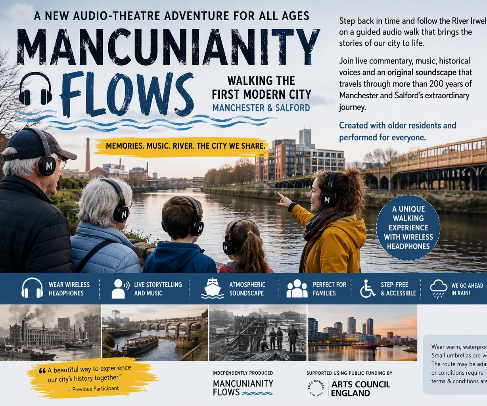
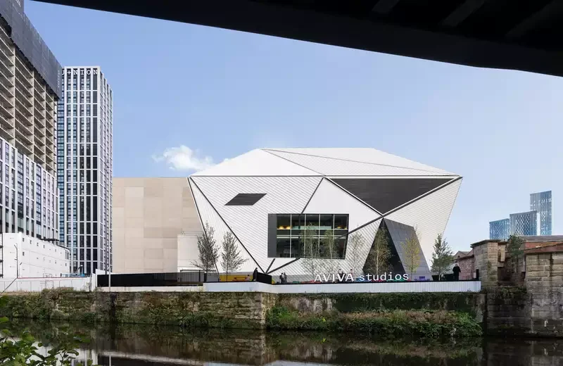
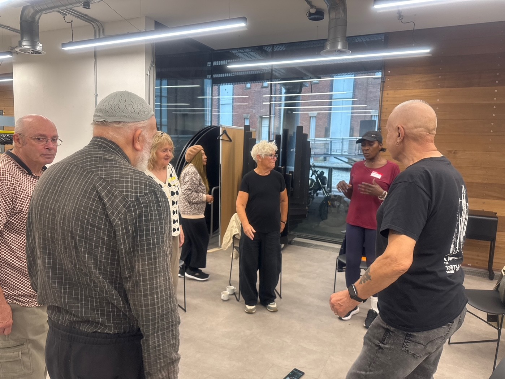
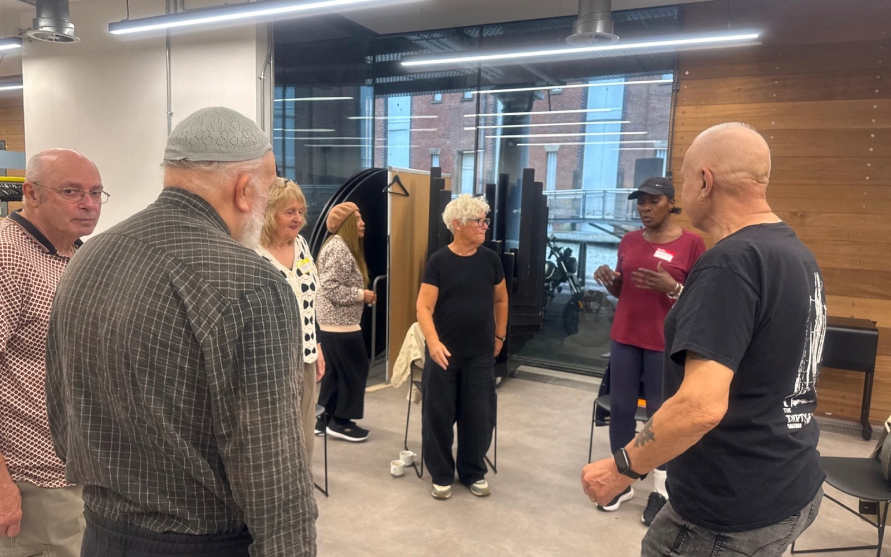

Christmas 2026 · Manchester and Salford
Mancunianity Flows: What Can a River Remember?
A River Irwell audio-theatre experience beside the water, with supplied wireless headsets and a live musical finale.
Saturday 19, Sunday 20 and Monday 21 December 2026
Morning
Performance starts at 10:30 am
Afternoon
Performance starts at 1:30 pm
Meet at The Social, Aviva Studios
Water Street, Manchester M3 4JQ
Bookings are securely processed through TryBooking. The booking page opens in a new tab.
What happens
Walk beside the river, then hear its stories
Mancunianity Flows is an outdoor audio-theatre experience along the River Irwell. With a supplied wireless headset, follow a short riverside route as local voices, stories, songs and sound bring the surrounding landscape into the experience. The journey ends with a live musical finale beside the river. No app or personal headphones are needed. The complete experience usually lasts about 65 minutes; allow up to 70 minutes, including the final 15-minute finale.
Before you book
Event essentials
- Dates
- Saturday 19, Sunday 20 and Monday 21 December 2026
- Performance starts
- 10:30 am and 1:30 pm
- Arrival and check-in
- Please arrive at The Social, Aviva Studios, from 10:00 am for the 10:30 am performance, or from 1:00 pm for the 1:30 pm performance. The 30-minute arrival period allows time for check-in and wireless headset collection. We recommend checking in no later than 10:25 am for the morning performance or 1:25 pm for the afternoon performance. The walking group leaves the meeting point when the performance starts at 10:30 am and 1:30 pm.
- Meeting point
- The Social, Aviva Studios, Water Street, Manchester M3 4JQ
- Duration
- The complete experience usually lasts approximately 65 minutes. Please allow up to 70 minutes, including the final 15-minute musical finale.
- Route
- Traffic-free pedestrian route of less than a quarter of a mile
- Headsets
- Wireless headsets are supplied and cleaned between uses
- Finale
- Outdoor riverside musical finale; seating is on concrete seat blocks
Find what you need
Plan your experience
Tickets
Choose the right ticket for your group
- Adult: £15
- Senior aged 65 and over: £12
- Child or young person aged 3–17: £5
- Under three: free, but a free ticket must be booked
- Family Bundle: £38 for two adults and two children or young people aged 3–17
- Access Companion: free, but a free ticket must be booked
Under-threes and Access Companions attend free, but a free ticket must still be booked for every person attending.
Anyone aged 17 or under must attend with a responsible adult aged 18 or over. Children and young people must remain with their accompanying adult throughout the experience. Accompanying adults are responsible for their supervision and safety.
Confirm the selected performance and ticket availability in TryBooking before completing your booking.
Bookings are securely processed through TryBooking.
.jpg)
Free family game
Ripple and the Lost Story Web
Six glowing threads have escaped around the River Irwell. Join Ripple the golden spider to find hidden clues, rebuild the Three Flows, make your own soundscape and restore the river’s memories.
Best suited to ages 7–11. Younger detectives may enjoy playing with an adult.
Works on phones, tablets and computers. No download, account, adverts or personal information required.

A little taste of the journey
A soundscape from the walk
Listen to a short preview of the audio-theatre experience.
Listen to a 74-second soundscape preview.



One river · Shared stories
A journey through Manchester and Salford
Follow the River Irwell with six audio-theatre experiences that blend history, music and memory into a daytime riverside walk that feels both intimate and vast.
Meet the Weavers
Meet the people shaping the journey
The Weavers are local older people helping shape the stories, memories, music and route of Mancunianity Flows.

Your journey
Listen as the river meets the city
Supplied wireless headphones bring audio, prompts and local voices into the riverside journey. The walk concludes with a 15-minute live musical finale.
Can Manchester and Salford sing the same song?
A new chorus beside the Irwell
The slightly unreal, deeply familiar feeling of crossing between neighbourhoods, old routes and stories is part of the experience.
What emerges is less a celebration of one place than a conversation between several histories, all happening in the same stretch of river and shared by both cities.
Mancunianity
What we mean by Mancunianity
Mancunianity is the shared civic energy of Manchester and Salford: stories, identities and memories that meet along the same river. Say it slowly: Man-kyoo-nee-an-it-ee.
Stories and learning
Explore the stories behind the journey
Discover more about the people, places and histories that shape Mancunianity Flows.
A clear, supported booking
Book with confidence
Supported using public funding by Arts Council England. Developed with support from Aviva Studios, home of Factory International. Wireless headsets are supplied and cleaned between uses. Bookings are securely processed through TryBooking; confirm the total at checkout. Questions? Contact Mancunianity. Read the access information and privacy notice.
Ready to follow the river?
Choose from performances on 19, 20 and 21 December 2026.
Bookings are securely processed through TryBooking. The booking page opens in a new tab.